The Process Editor panel allows you to add and edit process routines.
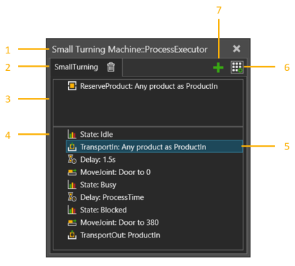
| 1. | Name of Component and Process Executor Behavior |
| 2. | Name of Process Routine |
| 3. | Requirements Section |
| 4. | Process Definition Section |
| 5. | Selected Statement |
| 6. | Statement Gallery |
| 7. | Add Process Routine |
Contents Hide
To access the Process Editor:
1
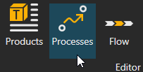
3.
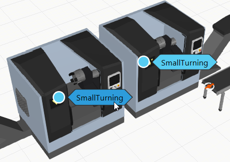
Process executor is responsible for executing one or more process routines. Each process routine is an implementation of a Process defined by the routine name. All Process routines with the same name are considered to be the same Process.
Process routines are saved with the owner component in a layout. They can be added by clicking green plus icon.
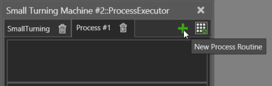
Statements can be added, edited, rearranged and nested in a process routine.
When adding a new statement, it will appear after the last selected statement in the process routine. If you need to rearrange statements in the routine, drag and drop a statement before or after another statement. The place where you are inserting a statement is shown by a line that will also indicate at what level you are inserting the statement.
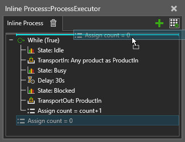
The Requirement Statements are pre-condition statements and they are used to select which process routine the executor will run next. The process routine can be executed only after all the requirements of a process routine are met at the same time.
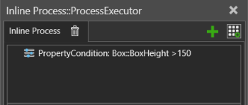
Each process routine contains a set of statements in process definition section executed sequentially.
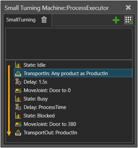
Process executor executes only one process routine at a time. Process routines are executed sequentially from left to right, if no requirements are filled.
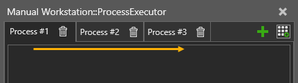
When a Process is completed, the requirements of all process routines are re-evaluated to select the next process routine to start. If requirements are not met, the process execution goes idle.
Process routines with the same name automatically belong to a group. This makes it easy to flow products to the same process but in different components.
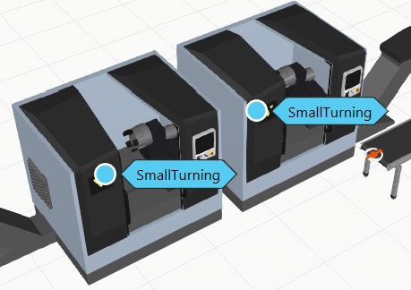
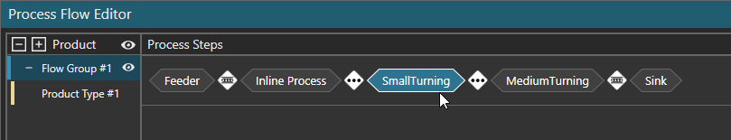
Be aware that process routines with the same name may differ in terms of their execution.
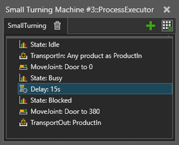
Every process routine has its own set of variables that are global in its scope. That is, all statements regardless of their nesting in a process routine can refer to the variables of the process routine.
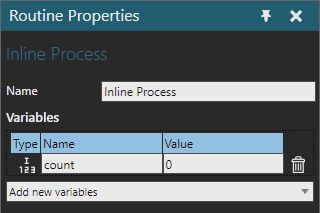
Note that the Value field is for reading only. Setting it does not affect a simulation, because the values are reset on simulation start and reset. Use Assign statement initialize variable values.
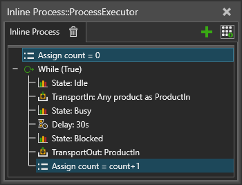
Be aware that process routine can contain also runtime variables, such as ProductIn, to indicate the product in that process. Runtime variables are created by different statements as needed and are automatically deleted on simulation reset.
The Statement Gallery window displays statements that can be added to the selected process routine.
| Name | Description |
| Append To List | Adds values from one variable to another variable, or creates a new list variable. |
| Assign Variable | Assigns a value to a variable. |
| Attach | Attach product(s) to a parent product. |
| Break | Ends the execution of loop. |
| Buffer | Transports products to and from patterned buffer. |
| Change Type | Changes the type of the defined product instance. |
| Comment | Comment statement. |
| Continue | Continue loop from start. |
| Create | Creates a new product of the given type, and places it in the defined container. |
| Delay | Waits for a specified amount of simulation time. |
| Detach | Detaches one or more products from a common parent product. |
| Flow | Controls flow-type statistics in a statistics behavior. |
| Get Property | Creates a new runtime variable linked to a property variable in a static component for using it in e.g. flow control statements. |
| Halt | Stops a simulation. Can also be used to reset a simulation. |
| If | If statement. Defines an if-then-else condition for executing one group of statements if the condition is True or another group of statements if the condition is False. |
| Move Joint | Moves selected joint. |
| Sends a message to the output panel. | |
| Property Condition | Requires a given property value to meet certain criteria. |
| Release Product Reservation | Release a pre-reserved product instance, so that it can be offered to another process. |
| Remove | Deletes a given product instance. |
| Reserve Product | A requirement statement that reserves a product for the process. |
| Run Robot Routine | A. |
| Select Products | Splits filtered product types from a variable to a new variable. |
Send Signal |
Sends the selected signal with the provided value. |
| Set Node Material | Changes the Material of the defined node in a Product. |
| Set Node Visibility | Changes the visibility of the defined node in one or more products. |
| Set State | Set state of the statistics behavior. |
| Start Transport In | Begins Transporting a Product to this process. |
| Start Transport Out | Initiates product(s) transport out from the process. |
| Switch Case | Defines several conditional statement groups, and executes one of them based on a value expression. |
| Transport In | Transports product(s) to the process. |
| Transport Out | Transports product(s) out from the process. |
| Transport Pattern In | Transports a pattern of products to the process. |
| Wait Property Condition | Waits until a property value fulfills the given condition. |
| Wait Signal | Waits until a given signal is triggered with value matching the condition. |
| Wait Transport | Waits for one or more start transport statements to complete. |
| While | While statement. Defines a condition for executing a group of statements in a loop. |
| Work | Reserves a resource from a transport controller to work in the process. |